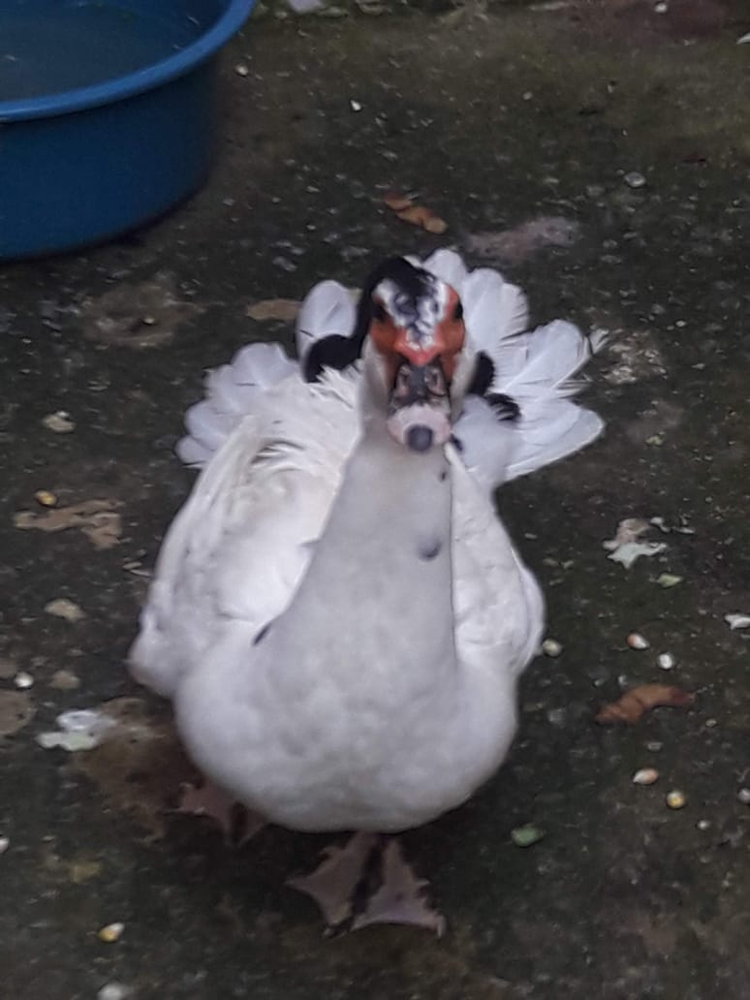
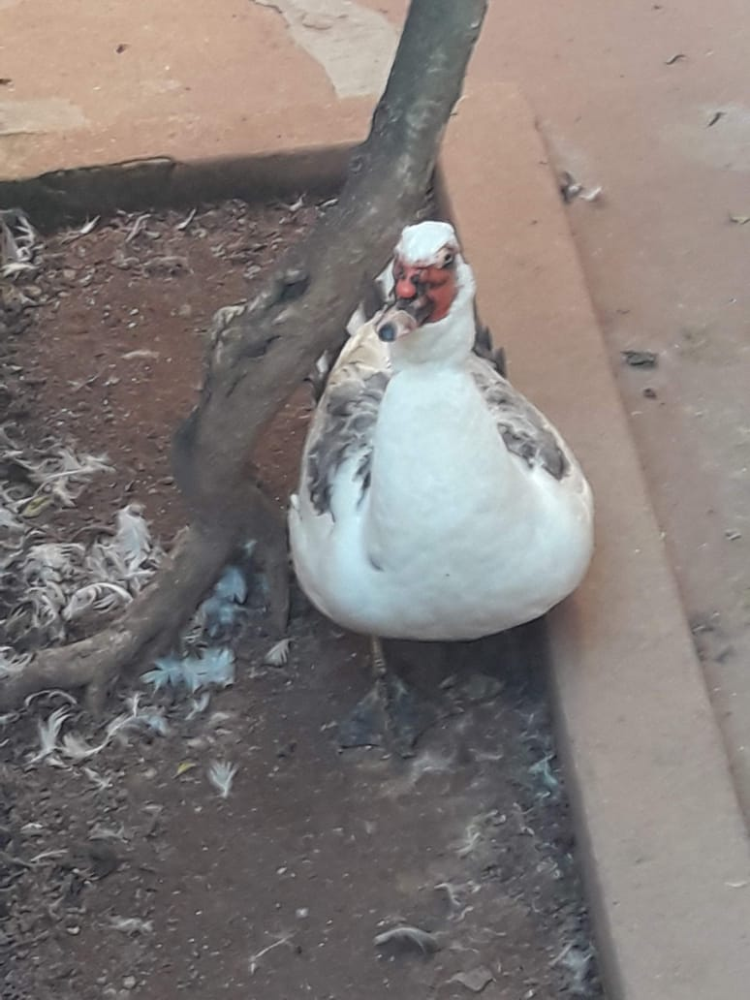
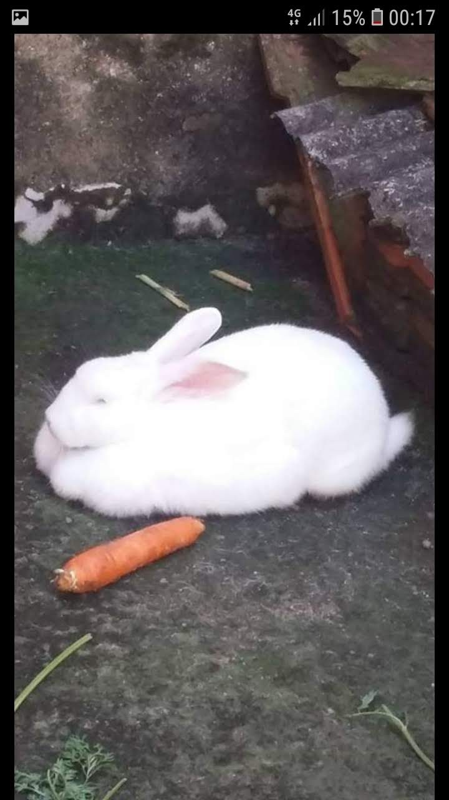
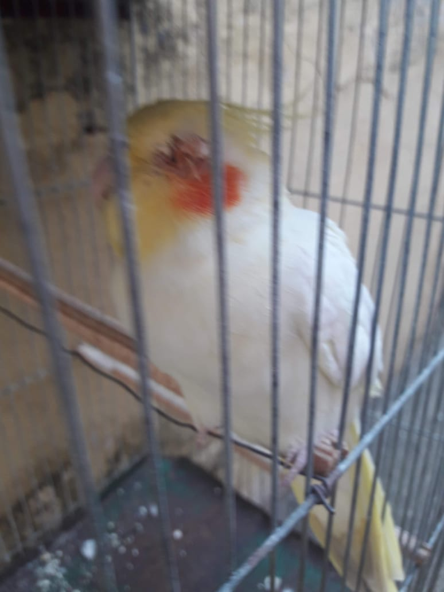
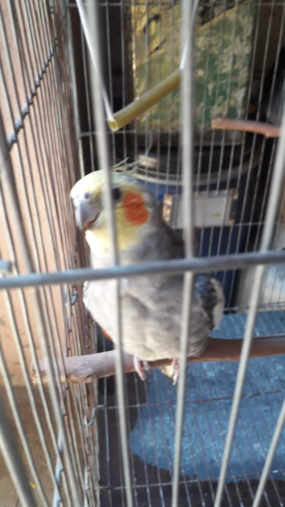
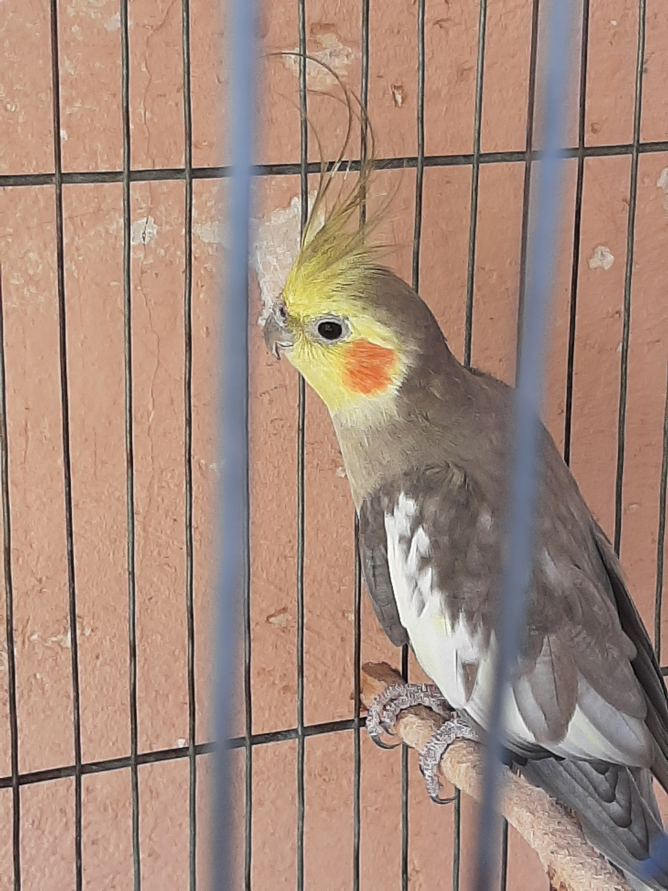
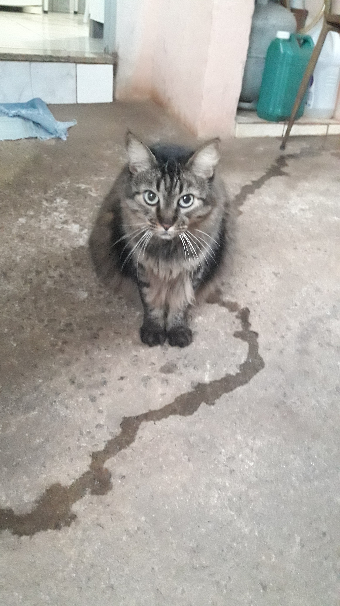
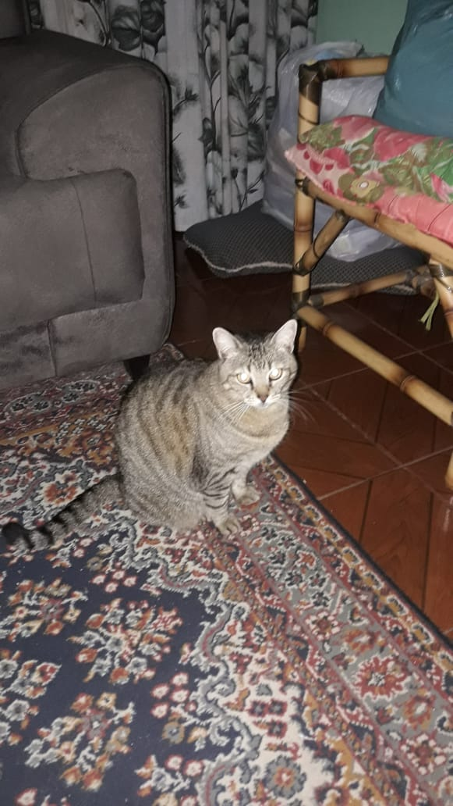
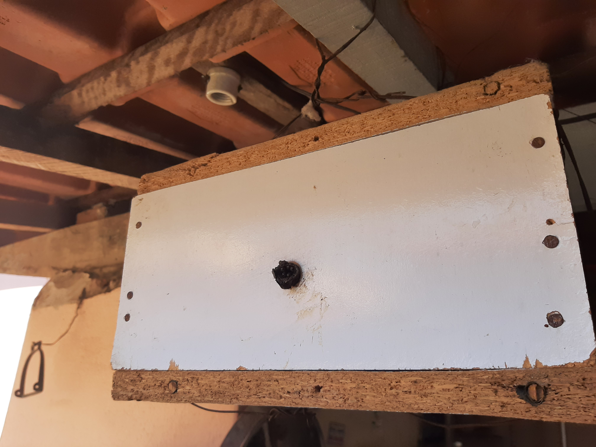

Cheetara
Então vamos começar com ela Cheetara, minha cachorra da raça pastor, ela é muito agitada e brava ou seja ela tem todos osrequisitos para fazer o caos em casa como exemplo sujar a roupa da minha mãe, quase derrubar minha vó é comer tudo o que achar pela frente e isso não é exageiro ela abriu um buraco na porta de ferro mas tirando tudo isso ela é muito leal, protetora e bastante amorosa (isso vale apenas para os moradores da minha casa, caso contrario ela tenta-ra te pegar).

toy light e esqwal dancer
Essas são minhas éguas, Toy Light (que é uma manga larga paulista) é a minha eu ganhei ela de presente e comeceia a andar mais nela na pandemia do ano passado levou um tempo para lembrar como andava pois fazia anos que eu não andanva mais e temos a esqwaal dancer (que é uma quarto de milha) ela era do meu pai mas agora quem cuida dela e anda nela sou eu mas prefiro andar na outra por que essa é como se batessem com uma marreta nas suas costas mas isso porque ela é bem mais forte.


Margarida e Donald
Essa é a Margarida e o Donald meus patos eu comprei eles quando eu tinha 3 anos de idade, o donald infelismente morreu de infarto e ele estava muito velho, ele era um pato enorme e bunito, eu peguei eles quando eles eram bem pequenininhos e amarelinhos mas é como um ditado que eu aprendi "Eles crescem" e assim foi de uma hora para a outra eles estavam grandes, eles chegaram a ater um casal de filhotes mas como minha casa não tinha estrutura para os 4 eu tive que dar eles embora, mas enfim ela esta aqui e sempre que eu posso eu encho o tanque de lavar roupa da minha vó para ela nadar.
 chinchinha
Essa é a chinchinha minha lebre quando ela chegou eu coloque ela em uma caixa de papelão para ela passar a noite mas no dia seguinte avia um buraco que ela fez para figir e se esconder embaixo do sofa, ela passava a maior parte do tempo dormindo e adorava couve e cenoura, ela ficou comigo por 9 anos antes de falecer e ela foi o primeiro animal com pelo que não atacou minha rinite.
Calopsitas
Eu tenho três calopsitas são elas Pisitinha a mais velha, ela foi meu primeiro animal e tem 15 anos, temos o Maracuja por causa das cores, e temos a Mousse que é a fêmea que forma casal com o maracuja.
  Chaninha e mininha
Essas são as gatas do meu avô uma nasceu no forro da casa e a outra alguem jogou no portão de casa e não foi embora e ficamos com ela também.
 Abelhas
Por fim temos a minha caixa de abelhas Manduri que eu ganhei do meu tio, elas não fazem muitas coisas mas é uma boa forma de passar o tempo vendo elas trabalhar.
